No! Please no! NO! NOOOOOOOOOOOOOOOO!
It became clear that GraphSpace wasn’t going anywhere. I had just moved to Manhattan with hopes of pitching it around and getting funding. But after a nerve-wracking first pitch and question round, it was clear that I had created something cool, but in no way useful. I was taking copium through every orifice on the daily, so it will still be a couple weeks before I fully tore myself away from it for good. Once I did, I needed to find something new.
I had a couple different ideas that I wanted to pursue, one being a non-linear interface for interacting with AI (GraphSpace-like canvas, branching dialogues, drag-n-drop), and the other being a platform for building trading bots on prediction markets. I decided to prioritize the trading bot idea. I thought I could first get my own bot up and running (which would help alleviate the devastating $3k a month in rent), and then I could build a platform for others to build their own without code. I gave myself one month to work on it before moving on to the next project, which I completely ignored once the time came. I now look back on this as an incredibly embarrassing mistake, although I still learned a lot.
The fundamental methodology and equation for market making was created by Marco Avellaneda and Sasha Stoikov. The basic idea is that a market-maker continuously maintains buy and sell orders around the mid price, capturing a small spread when both orders are filled. In order for this to actually work, the price that the orders are set at need to be nudged up or down to maintain a neutral position (orders are more likely to get filled closer to the mid price, so a sell order that is nudged down in price is more likely to get filled, which could bring a positive position back to neutral.) The neutral position is important here because the idea is to continuously capture the buy/sell spread without caring about the direction of the price of the asset.
I naively thought that it would be that simple after reading a paper called Toward Black-Scholes for Prediction Markets: A Unified Kernel and Market-Maker’s Handbook. The paper attempted to create a theory for market making prediction markets and argued for the creation of derivatives of those markets. Everything in that paper was based around basic market making theory that was introduced in the Avellaneda and Stoikov paper, High-frequency trading in a limit order book. The prediction market paper models markets as random walks with random large jumps, an information event, and attempts to find an equation that describes the optimal actions that a market maker can make. They start by transforming the foundational equations into a logit domain, 0 to 1, exclusive, and then they add other things like the jumps and drift. I would come to understand later that there is a massive flaw in this modelling, not just some subtle nuance of implementation, but something that completely prevents this from working even at a theory level.
The Guéant–Lehalle–Fernandez-Tapia (GLFT) equation from the paper, Dealing with the Inventory Risk: A solution to the market making problem is an evolution of the Avellaneda-Stoikov (AV) equation, most importantly that it doesn’t change quote behavior as time approaches the end of the trading session, which actually is worse for prediction markets because trading dynamics change drastically as time approaches expiration. The goal with all these papers is to model the financial environment, maybe the bid and ask prices follow an approximate random walk, and taker orders come in as a Poisson or Cox process (describing how often taker orders come in, are they arriving continuously? Or in bursts? How many are coming in and over what time frame?). This changes depending on how often orders get filled based on their distance from the mid price, orders closest to the mid price are the ‘best deal’, sell orders are cheapest for buyers and buy orders are highest for sellers, the best orders get filled first. Both equations try to factor in the probability of a trade getting filled based on its side (buy or sell) and its price. It’s important to model this accurately, so the equation spits out the correct reservation price (this is the price at which the market maker is indifferent to trading because of its inventory, e.g. if it has lots of shares, then the reservation price will be lower than the market price because it wants to offload inventory). In theory, if you continuously update your quotes to the res price as your position and the asset price change, your position will fluctuate around zero, while capturing a small spread on each round-trip trade, generating income over time.
After carefully implementing the GLHFT bot in Python and integrating it with the Polymarket API, I launched it. It drained the $200 account balance within minutes.
Some important things first.
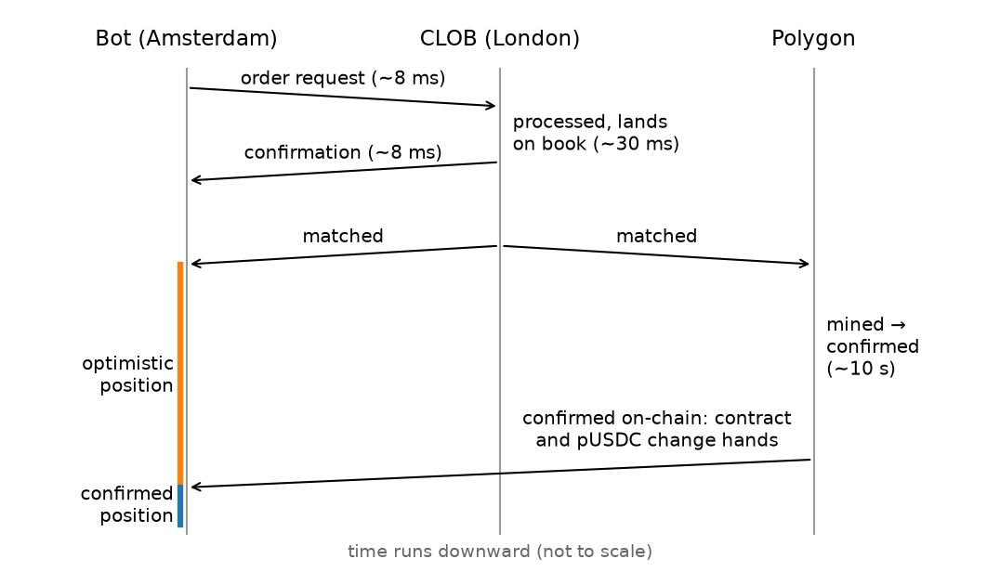
The non-obvious thing here is the tracking of everything. An order request gets sent to the exchange (~8ms), processed and lands on the order book (~30ms), the confirmation is sent back to the bot (~8ms), if the order gets filled, it's matched, mined, and confirmed (~10s). If an order is sent, the bot needs to optimistically assume that the order will land on the exchange without issue, this means that the internal accounting of the bot needs to optimistically say ‘a buy order is in-flight to the exchange and I shouldn’t send another order’ or even more important ‘my order was just matched, I need to record the exchange of contract and money optimistically, even though, from the perspective of Polymarket nothing has changed since nothing has been confirmed on-chain’. true/false contracts are technically NFTs and they are bought and sold with pUSDC, a Polymarket’s own stable coin. If you place a buy order for a True contract, and it gets matched, the pUSDC doesn't leave your account and you don’t get the contract until the order goes through the full lifecycle (match->mined->confirmed). That means you can’t re-sell the contract immediately, you need to work under the assumption that the transaction will eventually be confirmed, but in the meantime, place an order on the opposite order book with a buy to create an economic equivalent of selling the contract (buying a yes is equal to selling a no, this is why the orderbooks are mirrors). This lag means more pUSDC needs to be in the account than is actually traded, since orders overlap. The optimistic position is plugged into the equation, the confirmed position and balances are used to determine what’s actually sent to Polymarket.
After updating the bot to keep track of all of this, the bot is still only great at losing lots of money very quickly.
The equations we talked about earlier work under the assumption that the markets they trade are continuous. This means that the minimum price change possible (this is called the tick-size), is small relative to the price of the contract. Truly continuous markets don’t exist. I learned this after reading the paper, Optimal Market Making, by the same author as the Dealing with Inventory Risk paper, where this little footnote completely broke all of my assumptions about what will work and what won’t:
“Models a la Avellaneda-Stoikov, can hardly be applied to most stock markets for two reasons: (i) the discrete nature of prices (especially in the case of stocks with large tick sizes), and (ii) the fact that the very nature of the limit order books, which are queuing systems with priorities and volumes, is not taken into account. One of the only market making models really well suited to stocks is the model proposed by Guilbaud and Pham.”
Ok, so I guess it’s onto the paper by Guilbaud and Pham, Optimal high frequency trading with limit and market orders. The thing that surprised me after this realization was that the clob exchanges seem to be the odd-ones-out in the market-making literature, you would think that the same exchange dynamics as stock markets would be the focus, like who cares about credit markets? Anyways, in this paper optimal decisions are derived from a modeling technique called stochastic optimal control, which we will talk about later.
A market that could be effectively modeled as continuous is the Bitcoin market on Binance. The price of Bitcoin is large ($70,000) and the tick size is small ($0.01). On polymarket and other prediction markets, tick sizes are large. Prices exist in a 0.00 to 1.00 range, while their tick sizes are typically $0.01 to $0.001. Using a continuously-modeled equation like AS or GLFT, will fail on these markets. Once I realized this I completely stopped any further testing and started researching market making for discrete markets.
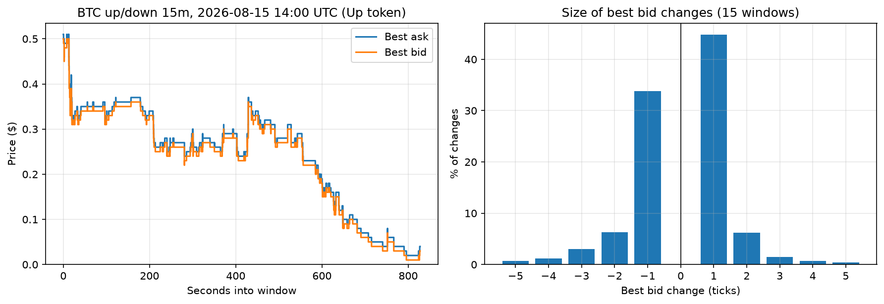
Before we go any deeper, we need to have you (yes, you) develop an accurate mental model of how the actual exchange works to have any hope of creating working strategies. So here are some facts:
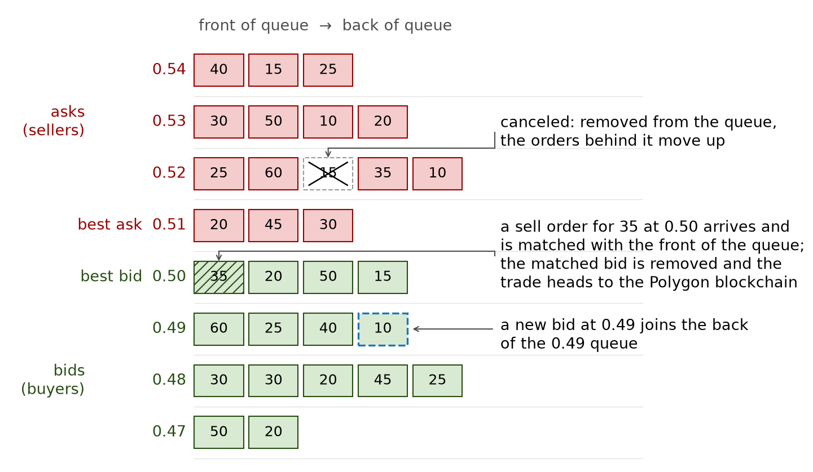
We use a Python package called hftbacktest here. We can use this and feed in data from Telonex, a repository of high-frequency historical polymarket data. In the live-testing later, some problems are revealed that will need to be patched. But for now hftbacktest offers a good approximate simulation for the market.
The great thing about hftbacktest is that it uses a library called numba. This compiles any Python code that deals with NumPy data structures (in this context we are pretty much always using pre-allocated numpy arrays) into optimized machine code. This is a game-changer, as it means we can test ideas at much, much, faster speeds than we would normally be able to with just the standard Python interpreter (If I were to guess the speedup is at least two orders of magnitude).
Once I got the simulator operational, I spent the next 4 months in trial-and-error mode.
Following the paper, Optimal high frequency trading with limit and market orders, for market-making strategies for discrete markets, quickly brings us to an area of mathematics called Stochastic Optimal Control (SOC). This tries to answer how to make optimal decisions under unpredictable/random/stochastic conditions. The paper outlines a handful of market characteristics that are important, and then attempts to apply SOC to it. The factors being the Cox processes of buyer and seller orders coming into the exchange, the spread between the bid and ask prices (modelled as a markov chain), and a term for any other characteristics of the market (also modelled as a markov chain) that should be plugged in. With the markov processes, there's some probability, x, that the current market spread will jump to another spread (for example, there could be a 30% probability that a 1 tick spread could jump to a 2 tick spread over the next order book update) and the same could be said about any aspect of the market that could inform our decisions as a market maker. Given these probabilities, and the current position, the potential future value of each decision can be calculated through a process called backward induction. In this case, a decision is which orders should be placed (buy or sell) and how many ticks away from the mid price they should be placed. If there’s a low rate of buy market orders coming into the clob, and the position is very positive, the best decision would most likely be to place a sell order very close to the mid, as there is much urgency to offload inventory in order to keep the bot delta neutral (when the bot does not care which direction the market goes). What makes backward induction interesting is that it takes into account all potential future states internal to the market maker (like position) and external (like where the price may go or if the market intensity will change). Some states are more valuable than others, like having zero inventory, rather than holding a position, or holding a position in the predicted direction of the market and likely high trading intensity. When modeling the market this way, everything is discretized and turned into a markov process.
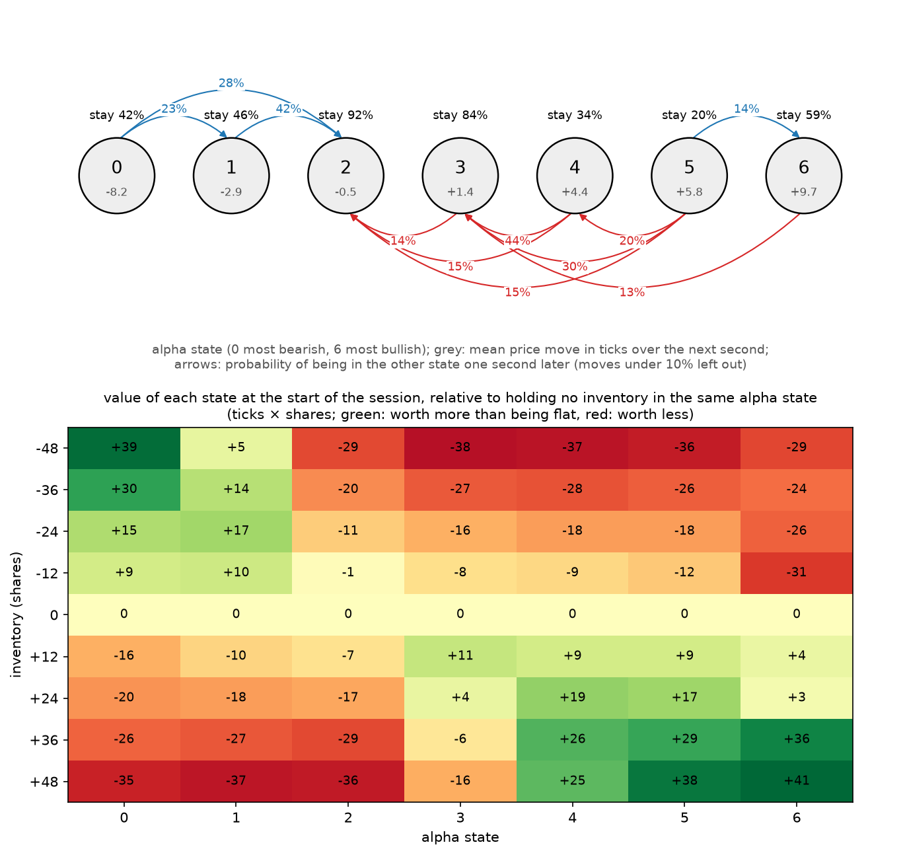
Tables like this can also be learned, which will be the basis for applying reinforcement learning to these types of problems, which we will talk about later.
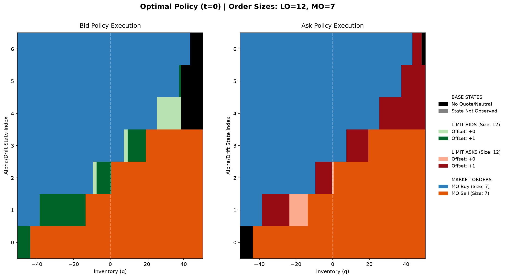
Further following the literature, I found two papers that were extremely interesting and very important. Firstly, the paper Market Making with Alpha Signals, which models the market discretely using SOC, but incorporates a drift term informing the market-maker where the price is most likely to go, with this, for example, positive inventory would be more valuable if the market is expected to go up. Secondly, a paper called Explainable Patterns in Cryptocurrency Microstructure explored how different features of the market could inform where the price could go. This was by far the most important paper I read throughout this project. Implementing this and quoting defensively, led to the first system that actually worked. It’s especially profound because, as the title suggests, it’s all explainable. We can look at exactly what features are most important and why. The paper focused on using a library called Catboost, for creating gradient-boosted decision trees (GBDTs). GBDTs are absolutely amazing. They don’t take a whole lot of compute to converge, they are simple to implement, very intuitive, and highly explainable (especially with SHAP plots, which allow us to see exactly how each feature influences the output of the model).
Exclusiving trying to capture the spread without any type of directional signal will never be profitable in a prediction market because you will always get filled by market participants who are working off of more information than you. This information could be related to the fair value of the asset for example. Maybe they have a fiber optic cable that pumps information about the Binance bitcoin market in Tokyo to a cloud server in Amsterdam (doing this they’ll be able to get information 60ms stale compared to 120ms stale using normal internet infrastructure). They’ll be able to calculate the exact fair value and update their quotes 8ms later, or they might have co-location with polymarkets clob (which is allowed now through their know-your-customer policy) allowing them to react to the state of the market in under a couple milliseconds. So to have the best chance here, we can assume that the clob is updated as quickly as information becomes available, this means that it will be best if we don’t even look at any external sources of information. For example if we worked off of the binance data only, we would be 60ms behind the fastest market makers (since they are reacting to their information in 60ms compared to our 120ms). If we worked off of the clob exclusively we can react within 16ms (8ms to our server and 8ms to the clob, plus any lag internal to polymarket’s own infrastructure). So, we need to create a model that takes in features of the market and predicts where it will go soon after.
It took a lot of trial and error to get the most useful model possible. As the model coincides with the execution logic and there is a lot of feature engineering. But here we can just start with a simple model that estimates the change in price in one second (. There are hundreds of features that could be potentially useful for the model. I started with features explored in the previously mentioned paper. From the shap plots, we can see that overwhelmingly, the most important features are variations of order-flow-imbalance. We also want to choose our loss function carefully, as there are different consequences to different types of wrong predictions. For example, if the model thinks the market will go up, but it actually goes down, it should be punished much more than if the market ends up staying flat as losses could be much greater. So instead of using OLS we could use GMADL as the paper suggested (Generalized Mean Absolute Directional Loss), which punishes the model more harshly depending on direction and magnitude of the prediction. With catboost we can easily plug in our own loss function (we can even have different ones for training and validation, for example in the paper they use OLS for training and GMADL for validation).
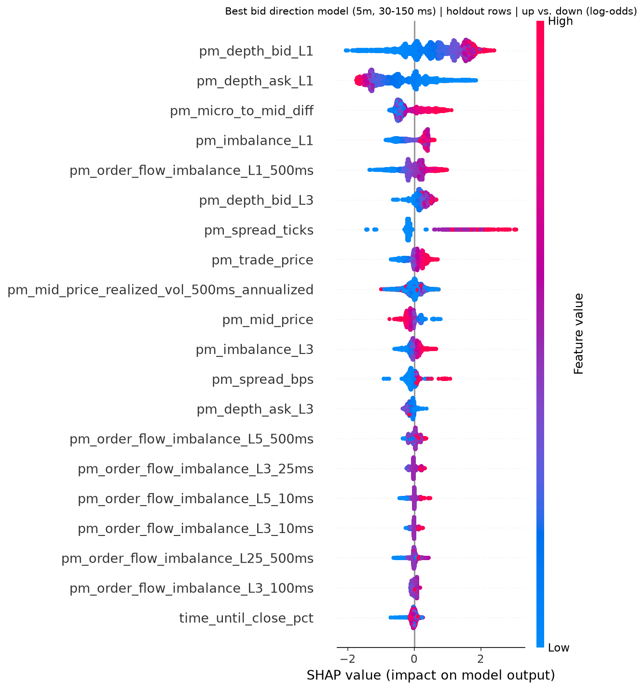
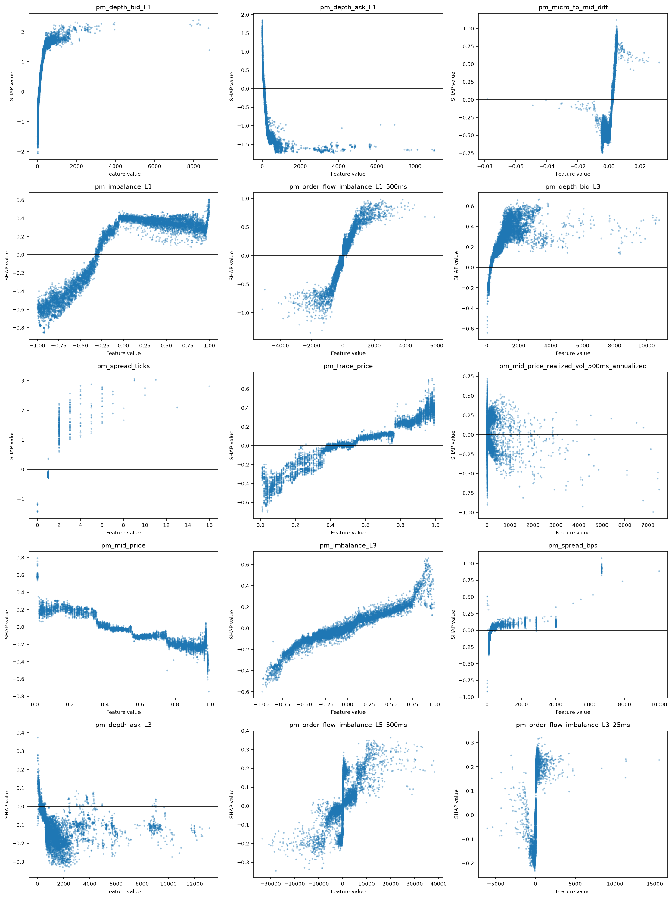
The 5m/15m up/down btc markets derive their value from the price of bitcoin. The contract itself is valued at $1.00 if the price of bitcoin is above where it was at the start of the session and it’s valued at $0.00 if it’s below. So what happens if we look at a large bitcoin market to inform how we quote? The largest market is Binance, and that exists in an AWS server in Tokyo. So my first thought was to test if there is anywhere where changes in the Binance price, correlate with a change in the polymarket price, and more importantly, when does this happen since the markets are so far away?
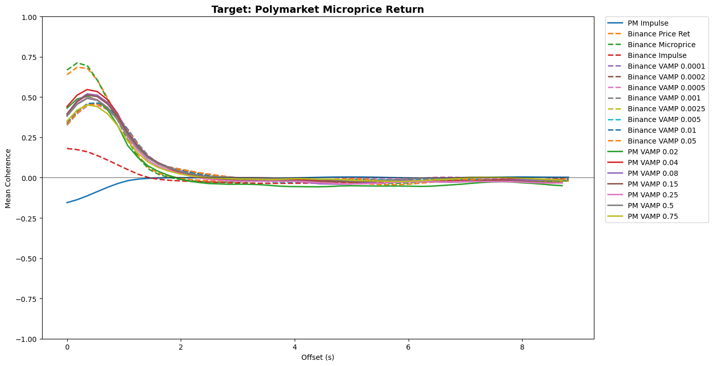
It’s important to note here that at the time of these tests the polymarket contracts were based on the actual price of bitcoin, a month or so after this test, polymarket changed it so its contracts follow the ‘time-weighted average price’ (TWAP), a rolling average of the price of bitcoin. They did this because there was statistically significant evidence of manipulation, where traders would gather a position of the polymarket contracts when they were cheap and then place large bitcoin trades to drive the price up or down right before the end of the session, ensuring that their polymarket position closed in the money.
We can also experiment with the fair value of the contracts, and we can calculate this relatively easily since these contracts are just options so we can use Black-Scholes (they expire in or out of the money depending on the starting price, which is the strike price).
The Up contract pays $1 if bitcoin finishes above its price at the open, K, so it is a digital (cash-or-nothing) call. With the Binance price St, volatility σ and time to expiry τ (in years), and no interest over 15 minutes:
where N is the standard normal CDF.
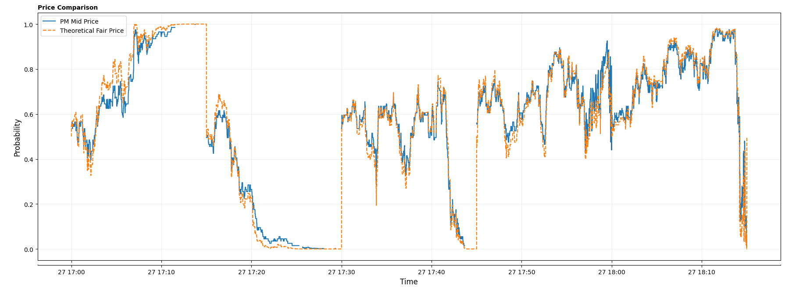
From the stochastic optimal control strategy you can quickly see that a regime emerges, but this regime is produced by backward induction instead of actual learned performance. I had the idea of using a library called Optuna to optimize a handful of thresholds to produce a regime based on how well it does in the backtest, instead of using backward induction. Optuna is usually used for hyperparameter tuning ML models, but I’ve found it to be extremely useful as a general tool for finding the right input values that maximize (or minimize) some output. I used Optuna throughout this project for many different things. The tuned thresholds produced a similar regime in structure to the backward induction one. Looking at a chart of position vs alpha signal, it looks like an S.
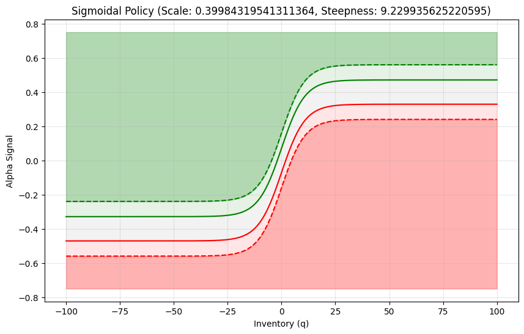
The natural next step after stochastic optimal control is a Deep Q-Network (DQN), as this is essentially deep learning applied to backward induction. The main idea is to learn the value function, instead of calculating it manually from the markov chains. This takes us to stable-baseline3 and openai gym (now called gymnasium). With this we can define an environment and a reward function. However, we need to closely account for the credit-assignment problem, which asks the question: how are we going to reward good-decisions and punish bad ones? And what type of reward should we use? We can’t reward based on the session’s pnl or sharpe ratio since that would be too sparse and the agent wouldn’t be able to figure out how its decisions lead to that outcome. We need to lay crumbs to get it to learn a basic successful trading strategy and then combine that with a cumulative statistic like sharpe ratio for the entire session. Once done, however, and running for almost a day on my laptop, the credit plot shows the agent slowly learning that the best strategy is no strategy. Gradually, the agent places fewer and fewer trades per session, asymptoting at zero. I tried to mitigate this with different ways of rewarding the agent, but nothing seemed to work. It was simply unable to pick up on what actually led to successful trading. And we know that it had all the information it needed to trade successfully, the alpha signal and fill probabilities were there and hardcoded strategies that traded on these alone were successful. So something with the RL setup must have been whack (or it’s a far too complicated solution for this type of problem). I decided to put a pin in it.
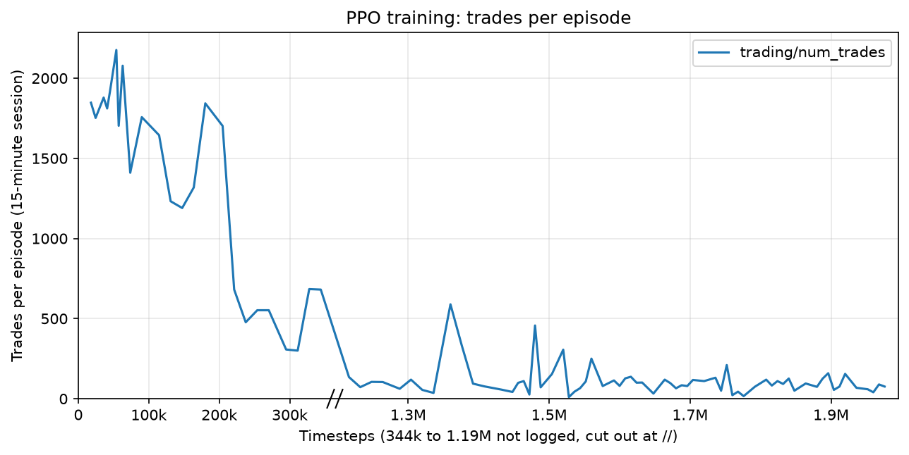
The problem with the custom regime is that its constant, non-linear patterns cannot be modeled, so the natural next step here is to use something that can, some universal function approximator, maybe an MLP? We can feed any array of inputs into it and optimize it to choose the best output based on those inputs (an output being an action like place a bid or ask, or a state like ‘given these inputs, there should be a bid at an offset of 1 tick’) there’s just one problem: usually when optimizing an MLP, you have labelled data, this allows you to take the difference between the label and the output, and use a process called backpropagation to change the parameters of the MLP in the most optimal way possible. But there are no labels here. At any given point in time, we don’t know what would have been the best order to place. We only know how well the strategy (the MLP with those parameters) performed at the end of a trading session, so we have to use this as our score card and find a way to optimize the MLP using a cumulative statistic instead of labels.
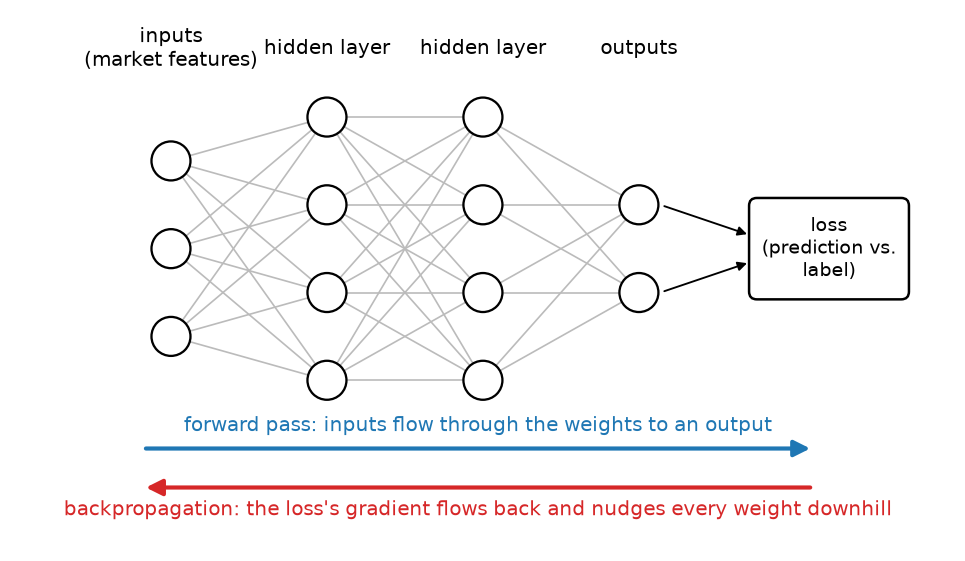
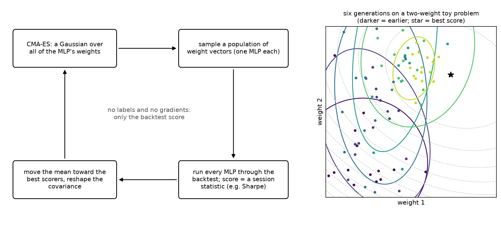
I’ve found the best way to do this is to use an algorithm called covariance matrix evolution strategy (CMAES). CMAES tries to map out the surface of the manifold at which the parameters of this environment exist in and in doing so it can descend this surface (or ascent depending on the objective function) to eventually find an optimum. It can be plugged directly into Optuna. The MLP can be made small or large. Larger means more parameters that will need to be tuned. Convergence takes a very long time (over 48 hours, a couple seconds each trial on my 8 core laptop) since each trial contains the MLP being backtested, and parallelization can’t happen since previous trials inform the next trial’s parameter. Ultimately, this never worked. It was able to bring the MLP to breakeven, but it never converged in the positive.
Right now the catboost model predicts the expected change in price one second into the future. The problem with this is its extremely noisy, especially on an asset with such a large tick. This leads us to our next model, a model that predicts the discrete tick changes instead of the regression. We want a model that can give a rough probability of where the market is going to go. For example, within the next second will the market go up one tick, two ticks, maybe down 3 or more ticks. This also fits the market to a much greater extent since it is discrete and can't be modelled well by continuous regression.
Ok now we have a model that, based on the features of the market, can give a probability of the tick changes within the next second (btw, this one second horizon that was chosen is completely arbitrary and we will test this later and come to learn that predicting much shorter horizons are much more beneficial, actually the most helpful paper for choosing horizons turned out to be LiT: limit order book transformer, you’ll see why if you read the paper). This then raises the question: how do we optimally execute based on these probabilities? We can start by examining how the value of an order changes when the probabilities of the tick-changes change. For example, if there is a high probability that bid price will increase, maybe because there's high resting liquidity or lots of buy orders coming in or both, then having a bid is more valuable compared to a bid in a market positioned to go down. Let’s examine how we can implement these ideas into a concrete expected-value equation. Firstly, we can’t forget about the costs and rebates curves of the exchange. Polymarket and other prediction markets follow the equation: p * (1 - p), costs are highest at 50% and lowest at the extremes so costs stay consistent with the value of the contracts being traded, as opposed to a flat fee where relative costs would explode at the extremes. Polymarket gives market makers 20% of the taker fee, so the value of a resting bid might include the probability of the bid filling and then the probability that the best bid price will tick up plus the maker reward at the fill price.
Fees and rebates. Taker fee and maker rebate per share at price p:
Exit value of a filled bid (long), from the model's probabilities that the best bid moves k ticks within H seconds, closing as a taker. The short case SH mirrors it with the ask model and −k:
Value of a resting quote at the touch: it only pays if it fills; then it earns the rebate and half the spread, and carries the exit value:
Decision. Every 25 ms, each option is scored as EV per second, VH/H, over horizons H = 1–4 s; doing nothing scores 0 and the best option wins. Holding a long position, the bot weighs posting an ask to close, holding, or selling at market:
where
The catboost models predict where the bid or ask prices might go, meta-models predict whether or not it's a good idea to actually place an order given that signal. For example, in a highly volatile market there might be a high chance the price dips a couple ticks, but to actually use that signal to trade on is a different question entirely.
I came across the idea of a meta-model senior year of high school when I read (skimmed) the book, Advances in Financial Machine Learning, but at the time I was hopelessly trying to create a stock market bot using the Interactive Brokers python API, but I had no idea what I was doing (I still don’t know what I’m doing).
The goal of a meta-model is to give a confidence score for a potential order (being placed because of another signal, hence ‘meta’). Obviously, the meta-model needs to be trained on labeled data. For example, it could be given all the different features of the market, plus the intention (bid or ask order) and then some label about whether or not it was a good idea to actually place the order. The tricky thing here is deciding how to determine whether or not a placement was good or bad, and this ended up taking a lot of trial and error. Should it be if the market goes in the direction of the order 1s, 3s, 5s from placement? Should it be based on ticks and the markets own timing, e.g. 100 book updates into the future? Maybe it should be based on if the profit was gained in the round-trip from a position of zero to nonzero (short or long) and back to zero? Testing each of these, the most robust was if the market moved in the direction of the order over the next 1 second.
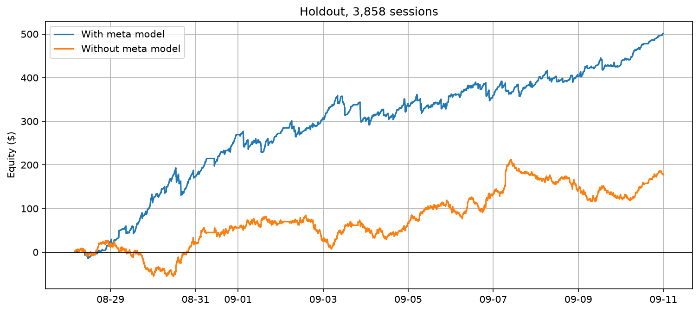
The problem with the expected value equations is that they are rigid strategies, they don’t learn, there’s nothing to optimize, and they depend entirely on the accuracy of the probabilities generated by the catboost models. This got me thinking about if the execution itself can be its own optimizable and adaptable system, instead of picking from a bag of equations. I started exploring the idea of decision trees, where each node in the decision tree is some inequality. Like position > 0 or uptick_probability < 0.13, apart from the position comparisons, the thresholds can all be learnable using Optuna. I would just need to construct a sensible decision tree, optimize its thresholds in the inequality nodes, and see how profitable it could get in the backtests.
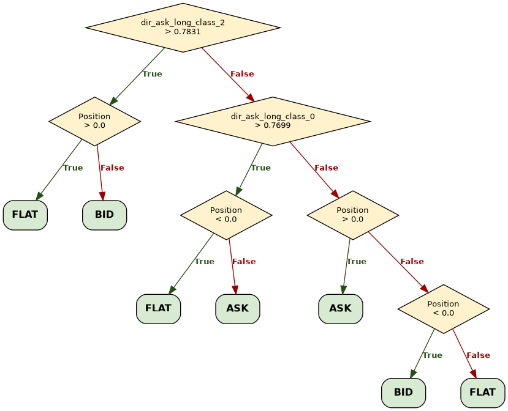
I then wanted to see if the decision tree itself could be adapted/evolved (including its thresholds). This led me to the DEAP (Distributed Evolutionary Algorithms in Python) library. With this, one can create any language for constructing decision trees. For this we can define that 1) leaves will represent desired states like bid or ask (at touch) or both bid and ask, or no orders 2) threshold nodes will check catboost outputs against a learned threshold 3) position nodes will check the position against 0, representing if the bot is long, short, or flat. There’s just one problem: we need a way to have these generated trees work within the numba-compiled backtest simulation. We can’t rewrite the strategy as a numba function every time for each new strategy. The strategy should be represented as a primitive like a string which can then be fed into the pre-compiled Python function, and then decode the string and implement its logic. This ‘bytecode’ needs to be able to fully represent any tree that DEAP could possibly generate. We can then have DEAP generate a couple hundred trees, give them a fitness score using the backtest, mutate and cross-breed them each generation, and then in a couple hundred generations produce something that’s profitable. For this to be practical we need to use a much more powerful computer, something with a much higher core count so the program can backtest many decision trees in parallel. We can use a google cloud 176 core c3 standard for this.
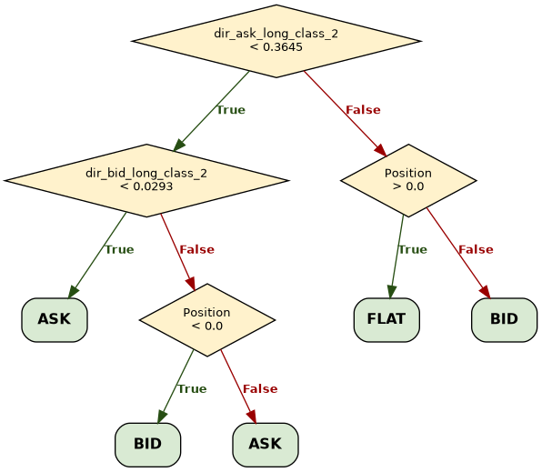
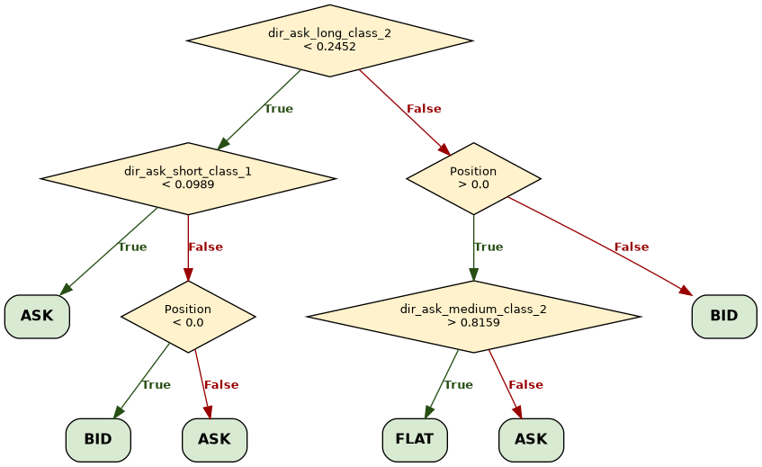
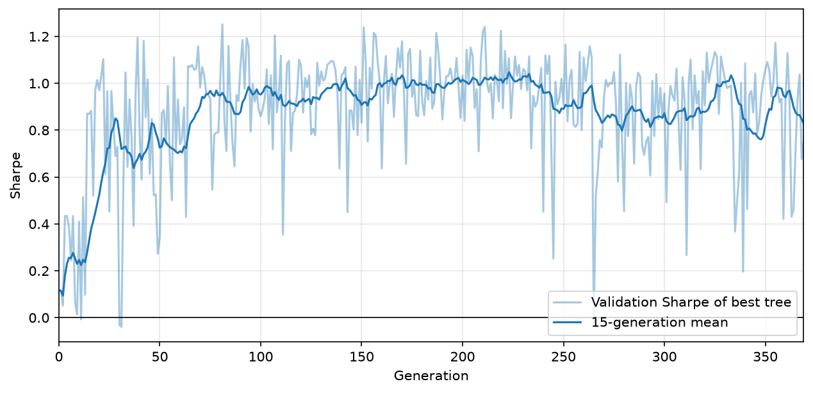
As you can see, performance peaks in about 250 generations, or about a day on the 176 core machine.
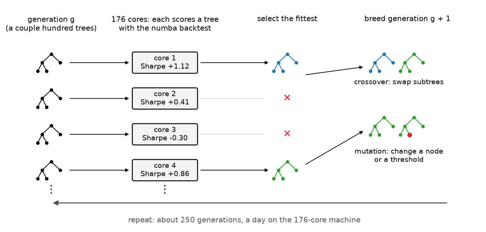
I find the tree generation strategy really cool. The trees it generates are super interesting and tell us a lot about what works in this market (and more importantly things that don’t matter despite what I would have guessed). But it takes a very long time even when parallelized across 176 cores. And it doesn’t offer a whole lot of flexibility, for example if we wanted to test the performance of placing orders 1 tick behind the touch instead of at the touch, we would have to run the whole evolution again (another day and the cost of compute, and on a 176 core machine, it ain’t cheap). When a tree is represented as a string (the ‘bytecode’ that was fed into the numba-compiled backtest function), it looks like this:
if_tick_lt(ARG2, pass_tick_thresh(pass_tick_thresh(pass_tick_thresh(pass_tick_thresh(0.36450197992566563)))), if_tick_lt(pass_tick_feat(ARG11), 0.029310296569013405, 2(ASK), if_pos_short(ARG18, 1(BID), if_tick_gt(ARG11, 0.029310296569013405, if_pos_long(ARG18, 2(ASK), 2(ASK)), if_tick_lt(ARG5, 0.480561199569427, 2(ASK), 3(BOTH))))), if_pos_long(ARG18, 0(WAIT), 1(BID)))So what if there’s another way to generate this? A way that’s quicker and less costly. Using an AI like Claude might be useful here. We can have it reason through thresholds and tree structures and even the tree language itself, produce the tree as a string, and then backtest the strategy in an iterative loop, improving its knowledge and reasoning each time. This worked incredibly well, but why do we even need to have the strategy represented as a tree anymore? Why not have Claude generate strategies as pure Python functions, where inputs are information about the internal state of the bot (like position) and external state (like order-flow-imbalance, or up-tick probability), and where outputs are ideal order states (like a bid_offset_1, giving order type and distance from best). This will give maximum flexibility. We can put the agent in an isolated training environment, trading-gym, and have it come up with strategies, backtest them, learn and iterate continuously.
Now it’s time to test the best strategy live. The first test will mainly be a test of execution. What is the in-flight latency distribution like? What is the order latency distribution like? Do orders get rejected for any reason? Has anything changed with the dynamics of the market itself? Are there any rate-limiting problems, do the buckets refill as Polymarket docs state? How fast is inference for the catboost models, and will that fit within the chosen interval of 5ms? How fast is on-chain settlement, on average?
I launched the bot on a c3 2-core standard instance on the google cloud datacenter in Amsterdam (8ms away from the exchange). A couple problems appeared. The order latency was around 40ms on average instead of the 10ms modeled in the backtests (this was found by measuring the total time from when the order request was sent to when a confirmation was received, subtracting the time in-flight, ultimately giving the time the exchange took to process the order) and the catboost models were inferring too slowly to fit within the 5ms interval (each of the six were about 1ms, totalling 6-7ms). To make the order latency more accurate, I wrote a script that generated synthetic latency data from the measured distribution. And for the inference problem, I just removed the models that weren’t needed for the strategy in question, bringing it down to just 2 models and around 2ms of inference time. Re-running the trading-gym agent with the updated latency model, the best strategy was slightly modified but still profitable in the backtest.
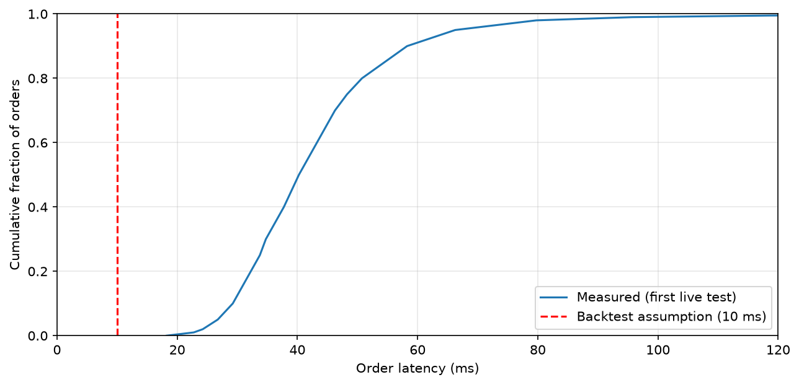
It was now time for the second live test; it ran continuously for 31 trading sessions before using up all of its allotted $30 pUSD in research funding. This revealed a couple of major problems with the Telonex datapipeline. Most importantly, it was double counting trades. Since trades are economically equivalent on both the yes market and the no market, the same trade is recorded in both markets and my pipeline was converting the no market trades to the yes market log, even though those trades were already recorded on the yes market. This massively inflated the performance of the strategies in the backtest, as it showed simultaneous fills and immediate spread capture. After fixing this, the backtest performance took a major hit. But I ran the trading-gym agent once more and it was still able to find a somewhat-consistent profitable strategy and an interesting discovery: all adverse-selection was happening at the touch. When the strategy only placed orders right at the best bid and the best ask, it was break-even at best. When it only placed orders at one tick from the best, it had a decent sharpe ratio.
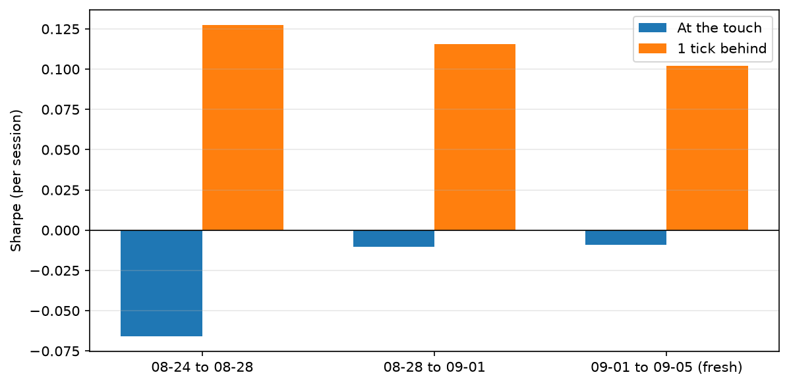
Time for the third test… It’s profitable! +65pUSD over about 18 hours of continuous trading! The important thing here is the data gathered. Now we can really see how accurate the backtest is compared to live.This revealed an interesting quirk of when and how trade updates are revealed that I didn’t foresee. When a trade happens, it’s first revealed in an order book update that the matched liquidity is now gone, and then 140ms later in a websocket trade event. So the bot can’t know of its new optimistic (pre-chain) position for quite a while.
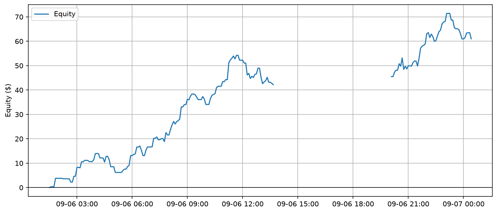
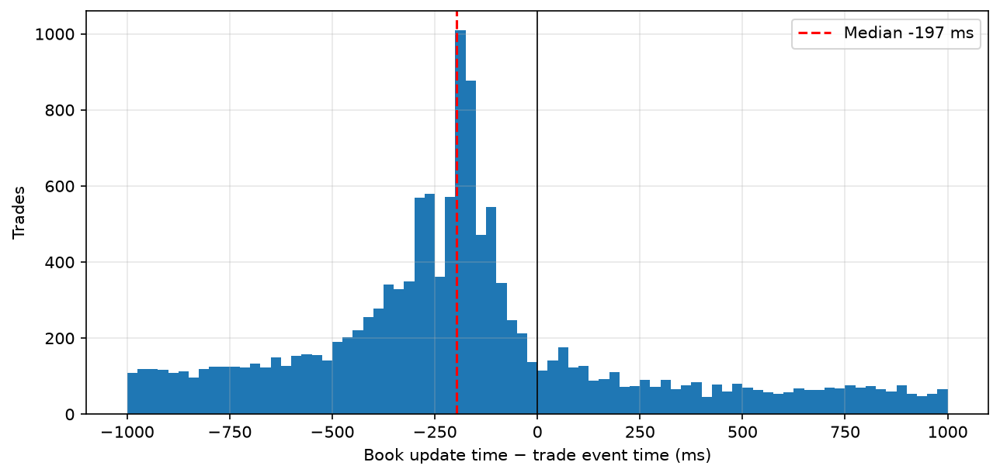
Now we have a highly-accurate backtest, proven by days of live-trading. We can start asking and testing any questions, and get a probable answer: what happens if we trade multiple assets at the same time? Maybe we could trade two highly correlated markets (like the btc-updown 15m and 5m), and could this smooth out PnL? What happens if we trade low-activity markets, how does that compare with the high-activity one (btc-updown 5m) in terms of profitability and sharpe?
My expectation here was that multiple markets would ultimately lead to a higher sharpe as the profit curve would be the cumulative average over multiple uncorrelated curves. However, the differences in sharpe between just trading the BTC 5m and trading it plus the 15m BTC, 5m ETH, and 15m ETH, were miniscule. This was because the BTC 5m has a magnitude more volume traded on it then the next market so its equity curve would eclipse that of any other market.
I tried to create a strategy that would take into account the correlation between the 5m and the 15m BTC markets. For example, if the bot held a positive 5m position that would reduce the propensity for the bot to take out a positive position in either the 5m or 15m position and allow for one market to hedge the other. But multiple problems became apparent. Firstly, both markets operate on completely different time-scales. The 5m market gets about 10x more trades per minute than the 15m, so if we traded the 5m primarily and used the 15m to hedge, the orders intended to hedge 5m inventory would fill too sparsely and inconsistently to be viable. If we traded the 15m primarily and used the 5m to hedge, the volume of the 15m would not be enough to be profitable in the first place.
The idea here is to place orders far from the touch (2 ticks out or more) in order to get a better queue position over time and only cancel orders when they get to the adverse-selection danger zone (e.g. near the best bid price when the market is going down). So instead of placing orders where you want them, you cancel orders where you don’t. The main problem here is instead of managing just one order you now have to manage however many you set, maybe 5 or 10 on each side of the book. Polymarket rate limits using a bucket system. Market makers get 40 points per second for order placement and 60 points for order cancels. On average the most successful strategy sends an update every 500ms, so there’s enough allotment for the ladder still. However when tested, the one order still beats multiple orders.
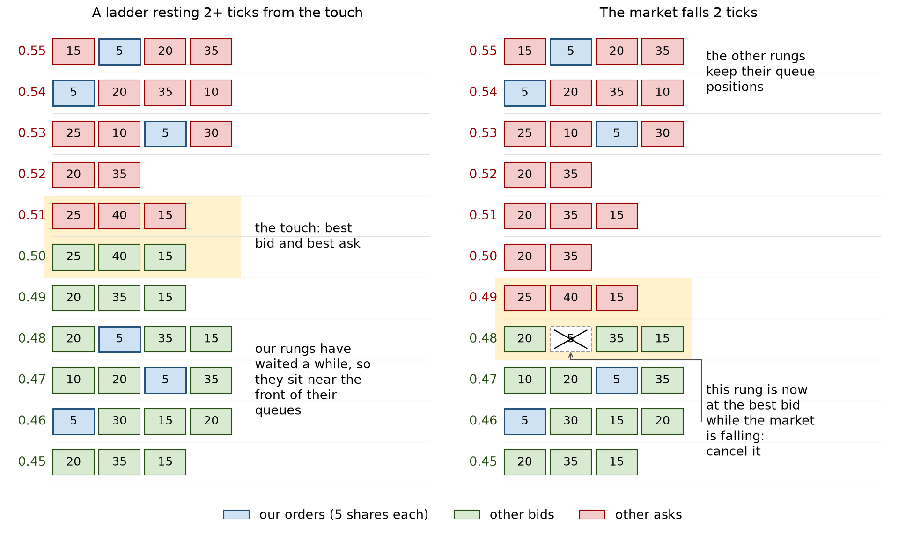
At a certain point in the bot’s development, I realized that two things were important: 1) processing information the instant it becomes available and 2) acting on that information as quickly as possible. Processing the information involves absorbing websocket events from the exchange as they get sent and storing them localling. Determining whether or not an update needs to be sent (the action) involves running the catboost models with that new data, and running the strategy logic, this happens on a loop. One would assume that a faster loop would be more profitable, as this is generally correct, but to what extent?
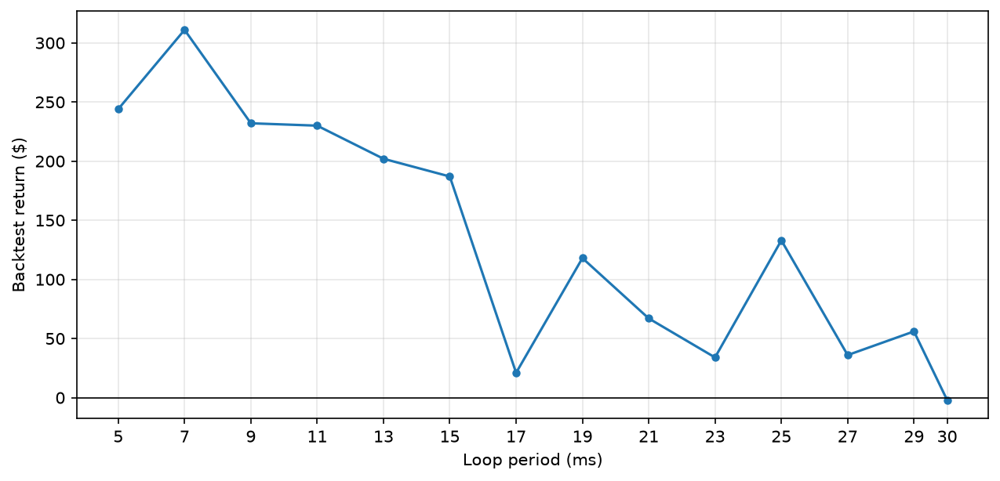